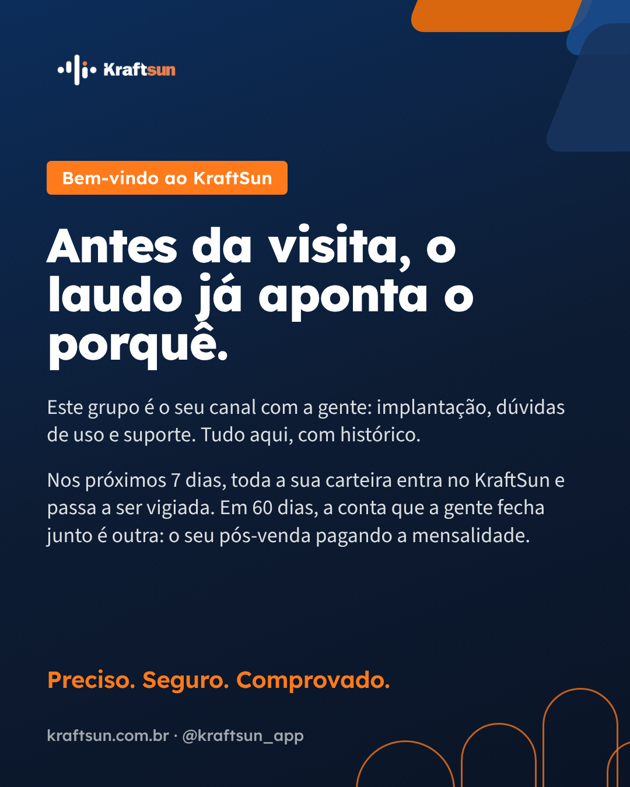
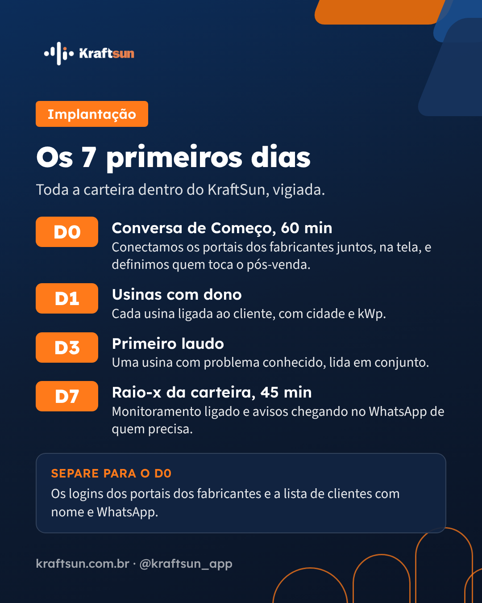
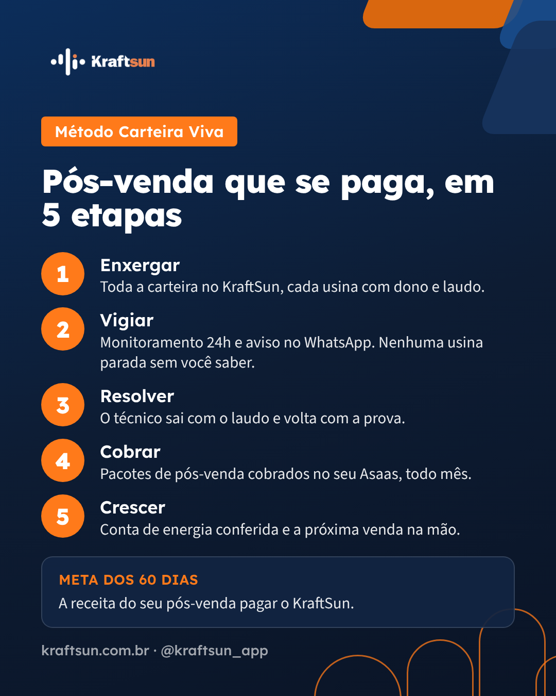
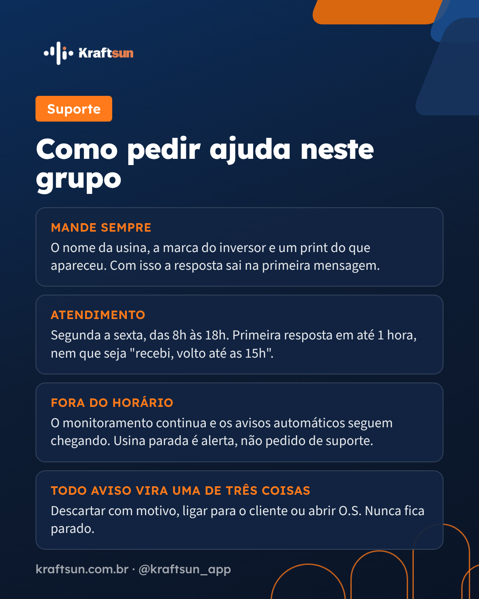
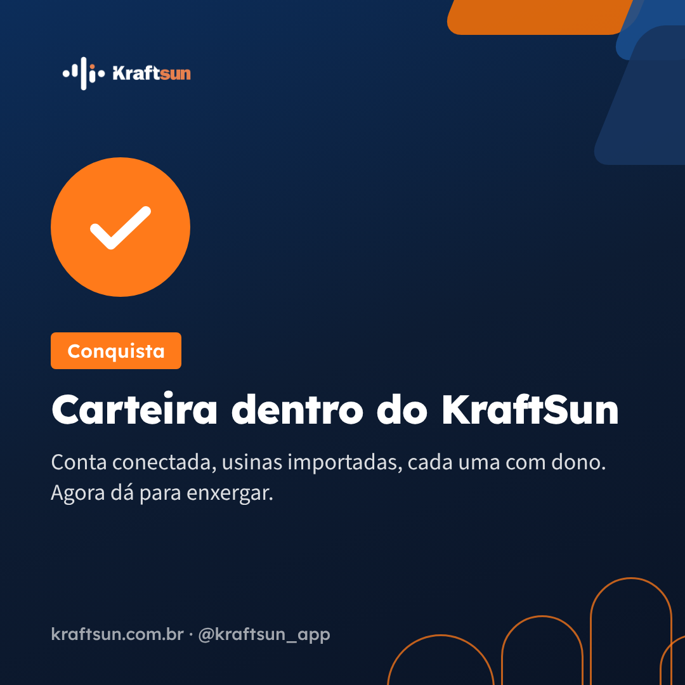
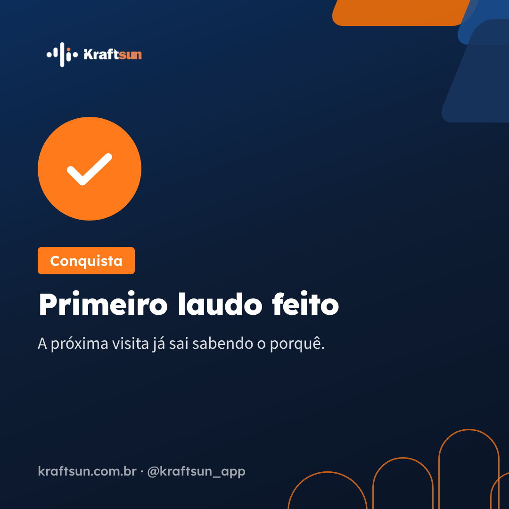
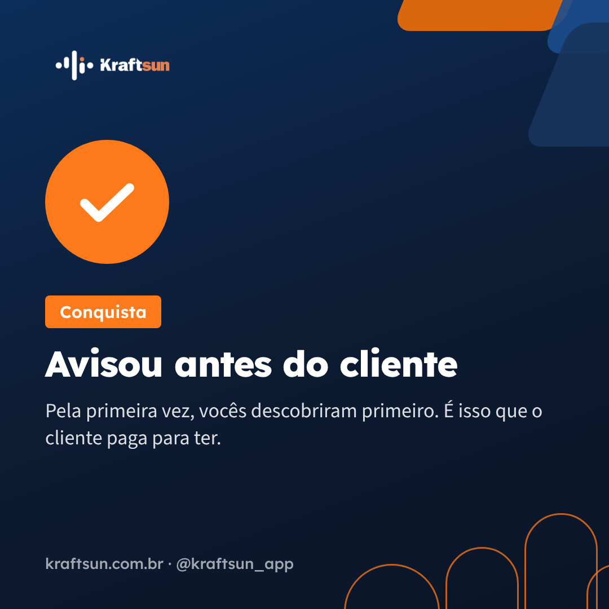
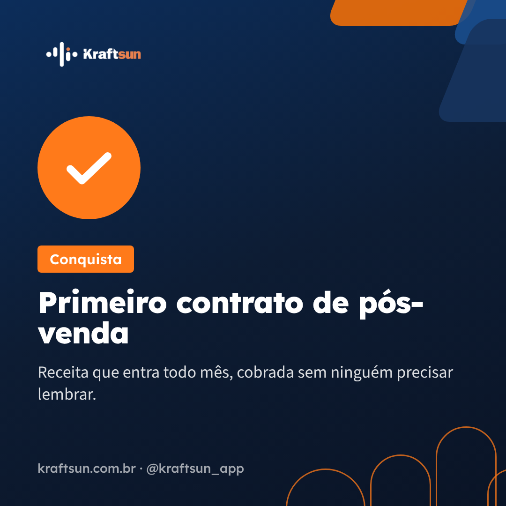
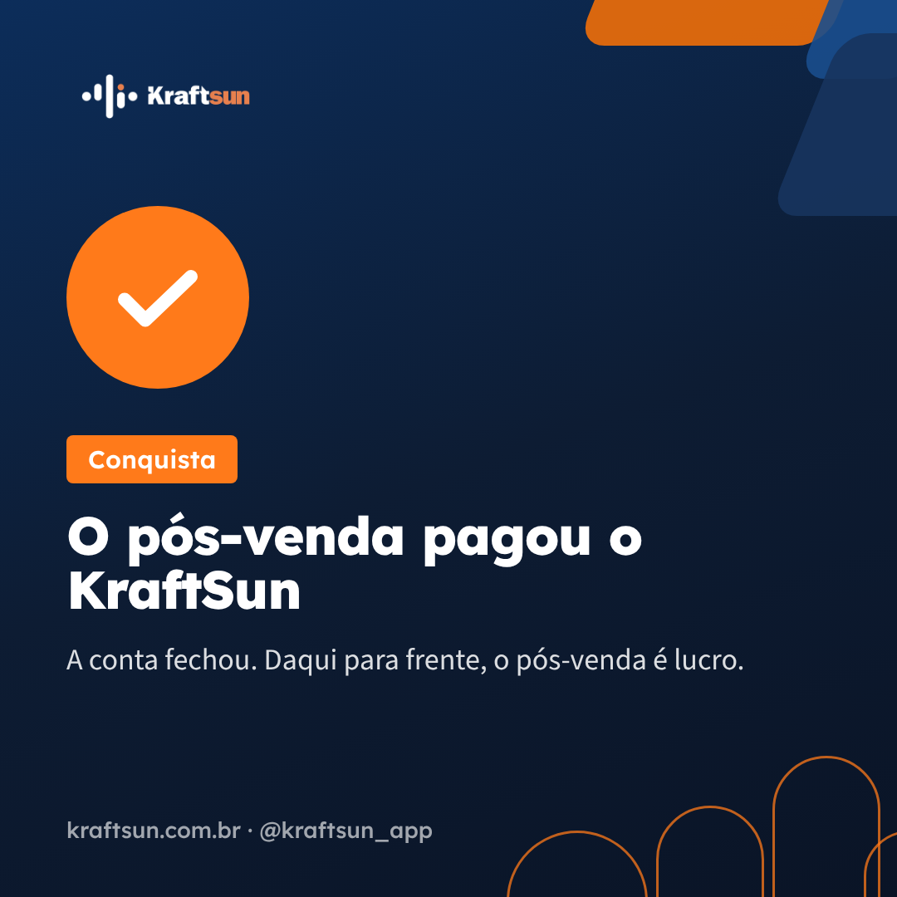

Por onde começar
Siga nesta ordem antes da primeira implantação. Os tempos são de leitura, aproximados. No passo 2, refaça cada clique numa conta de teste: quem conduz precisa ter feito antes.
- 40 min
Roteiro de implantação para quem conduz
As 5 regras, os 5 encontros minuto a minuto, o que falar e o que fazer quando travar.
- 60 min
Roteiro visual, com as telas reais
Onde clicar em cada passo, com as telas do KraftSun marcadas.
- 45 min
Playbook de Sucesso do Cliente
O grupo de WhatsApp, o cronograma de 90 dias, os scripts prontos para copiar e o protocolo de suporte.
- 15 min
Guia de Boas-vindas v3 e Checklist de ativação
O que o cliente recebe no D0 e o que ele marca depois da primeira conversa.
- 20 min
Método Carteira Viva
Por que o integrador ganha dinheiro com o pós-venda. É a tese por trás de cada encontro.
- 10 min
CRM: como o cliente chega do comercial
Só as páginas 18 e 19 do treinamento do closer: dar como ganho e a ativação depois do ganho.
A jornada de cada cliente
Cinco encontros por vídeo e o resto pelo grupo. O calendário espera o passo, não a data: se o D0 não fechou, não existe D7.
Materiais
Os internos são para você conduzir. Os de cliente vão para o grupo do WhatsApp no momento que o Playbook indica.
Para você conduzir
Roteiro para quem conduz
O manual da implantação, em texto.
Abrir PáginaRoteiro visual
As 23 telas reais com os pontos de clique. Dados fictícios.
Abrir PáginaPlaybook de Sucesso do Cliente
Scripts do grupo com botão de copiar, suporte e placar de saúde.
Abrir PlanilhaPlacar de Sucesso do Cliente
Uma linha por cliente, os 10 sinais e a cor. Atualizar toda sexta. Abre no Google; o acesso é liberado pelo Arthur.
Abrir planilha PDFPlaybook de Vendas: Pós-venda e O&M
Tese e objeções. Serve no Encontro 4, quando o integrador monta os pacotes.
Abrir PDF PDFTreinamento do closer, CRM v1.9.2
Leia só as páginas 18 e 19: dar como ganho e a ativação depois do ganho.
Abrir na página 18Para mandar ao cliente
Guia de Boas-vindas v3, Os 4 hábitos
Vai no D0, junto com a boas-vindas (script 1.2).
Baixar PDF · clienteChecklist de ativação
Para quem toca o pós-venda marcar, depois da Conversa de Começo.
Baixar PDF · clienteMétodo Carteira Viva
O método completo. Vai no D0.
BaixarImagens do grupo (toque para baixar)



02 · Boas-vindas (D0)

03 · Os 7 primeiros dias

04 · As 5 etapas (D6 ou D7)

05 · Como pedir ajuda

06 · Carteira no KraftSun

07 · Primeiro laudo (D3)

08 · Avisou antes do cliente

09 · Primeiro contrato (D45)

10 · O pós-venda pagou